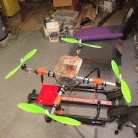
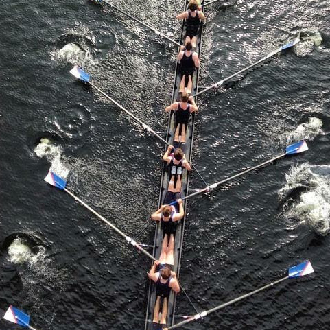

Why are you here?
I don't know why you're here, but I know why I am. I'm here to tell you a little bit about me. I am here to tell you about some of the projects I've worked on, people I've worked with, as well as other tid-bits of information I feel should be shoved in
your face, such as...
(image from google maps)
Side Projects
In my sparce free time I thrive when given the opprotunity to explore new things. When my family used to live in alaska, there was a program called the Saturday Thing, and this started it all. The drive to explore technology's possibilities leads me to create things, which you can see here.
Rowing
I started rowing spring season freshmen year. Now, I'm going on my 5th season rowing at Great Bay Rowing (GBR). I was introduced to the program by a friend, and haven't found a reason to leave, don't think I ever will. More on that here. (Image taken by Alex Morell)
